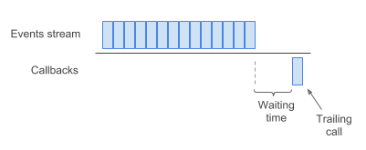
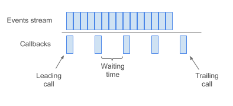

throttle и debounce -- функции, позволяющие не реагировать на каждое событие из потока событий, а реагировать лишь при необходимости. Например, при плавном движении мыши происходит больше тысячи событий mousemove в секунду. Нам же нужно реагировать, когда пользователь закончит движение или раз в какой-то промежуток времени.
debounce -- отложить вызов функции, пока не пройдет заданный промежуток времени.

throttle -- вызывать функцию не чаще раза в указанный промежуток времени.
